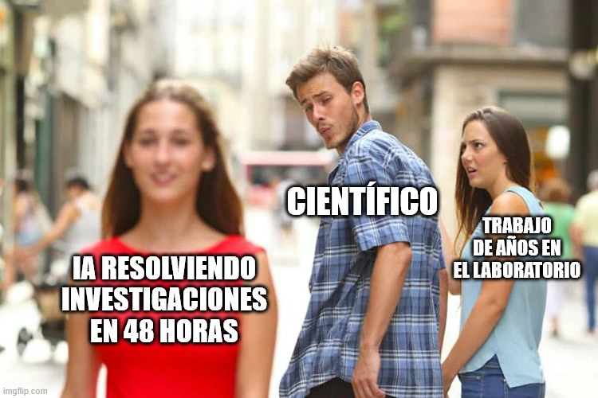

estrategIA #74 ·
Una nueva atracción en el laboratorio
El contexto
El novio que se distrae representa a un científico fascinado por la rapidez de la IA. La edición partía de un caso sobre hipótesis de investigación en superbacterias: las 48 horas del meme condensan ese ejemplo, no describen toda la investigación científica.
Publicado en: estrategIA #74 La revolución científica que trae la IA: una década de investigación en 48 horas
Leer el texto de la imagen
IA RESOLVIENDO INVESTIGACIONES EN 48 HORAS CIENTÍFICO TRABAJO DE AÑOS EN EL LABORATORIO
Marca de la herramienta visible en el original: imgflip.com.